How to use S3 Buckets ?#
S3 (Simple Storage Service) buckets are cloud storage containers provided by Amazon Web Services (AWS).
Instead of organising data into folders and files like on a computer, it treats each piece of data as a separate object with a unique name. Object storage is highly scalable, meaning it can handle a huge amount of data without slowing down. It also keeps copies of data securely to make sure it doesn't get lost.
This creates a scalable and cost-effective solution for storing various types of data, such as files, images, videos, backups, and application data. S3 buckets are highly durable and accessible over the internet, making them a popular choice for hosting static websites, data archiving, and serving as the backend for various cloud applications.
Tip
We recommend S3 buckets for long term storage of data and pulling them down on demand for analysis.
You can access S3 Buckets via the S3 Buckets section of the Bryn dashboard. See the Bryn page for more information on where to find this.
This page will guide you through how to create and manage S3 buckets with the following sections:
- Create an S3 Bucket
- Interacting with your Buckets
- S3 Browser Shortcuts
- Create objects within an S3 Bucket
- Managing objects within an S3 Bucket
- Deleting an S3 Bucket
- S3 Credentials
Create an S3 Bucket#
The new bryn interface includes a new S3 bucket section which includes three tabs; Buckets, Browser and Credentials.

To create a bucket, select + Create Bucket in the top right corner:
You can name your bucket using only lowercase letters, numbers and hyphens. Buckets can be between 3-63 characters in total:

S3 Buckets can be seen by any members of your team but there is the option to make them either Private or Public.
| Bucket status | Visibility |
|---|---|
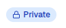 |
Only team members can access |
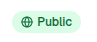 |
Anyone with the URL can read |
Select the visibility you require in the dropdown box and select + Create Bucket:
Warning
As public S3 Buckets can be accessed by anyone with the URL, do not host private or confidential information on such buckets.
Once a bucket is created it will be visible under the Buckets tab with information such as the buckets name, Visibility, when it was created, it's size, the number of Objects within the bucket and the Actions option.
You will find the URL for each bucket under the Bucket name. To provide others with access to public buckets, this URL will be required:

The visibility of a Bucket is not fixed and can be updated. To alternate between Public and Private visibility select either Make Public or Make Private under Actions from the Buckets tab:

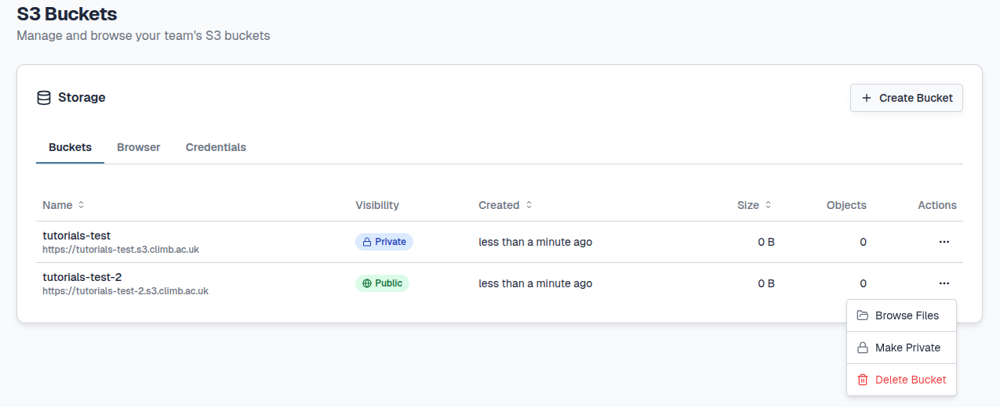
Interacting with your Buckets#
There are multiple ways to start creating and browsing objects within your buckets;
1) Click directly on the name of the Bucket you want to view
2) Under Actions select Browse Files
3) Select the Browser tab
Each of the actions above will redirect you to the Browser tab. Directly selecting through a buckets name will open the selected bucket however selecting the Browser tab will open at root. At root you cannot create files so will need to select a bucket at the bottom left corner as seen below:

To switch between your buckets you can either select the Go button at the top or select a different bucket on the bottom left.
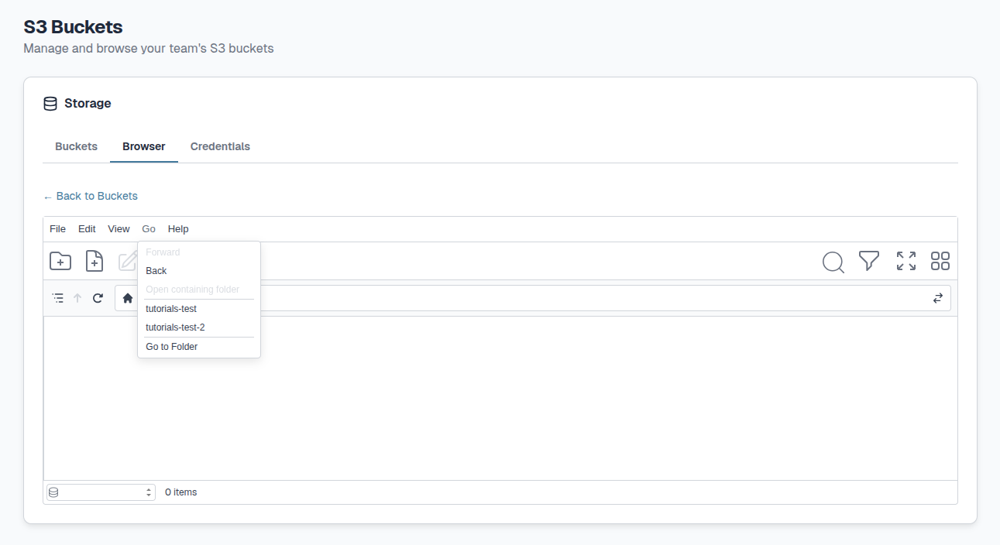
The task bars of the Browser tab allows you to create and manage your objects:

| Icon | Function | Icon | Function | Icon | Function |
|---|---|---|---|---|---|
| New Folder | Upload | Filter | |||
| New File | Archive | Toggle full screen | |||
| Rename | Unarchive | 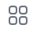 |
Change view | ||
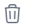 |
Delete | Search Files |
Each icon and it's associated function will be described below.
S3 Browser Shortcuts#
There are keyboard shortcuts available to create and browse objects, select Help > Shortcuts:

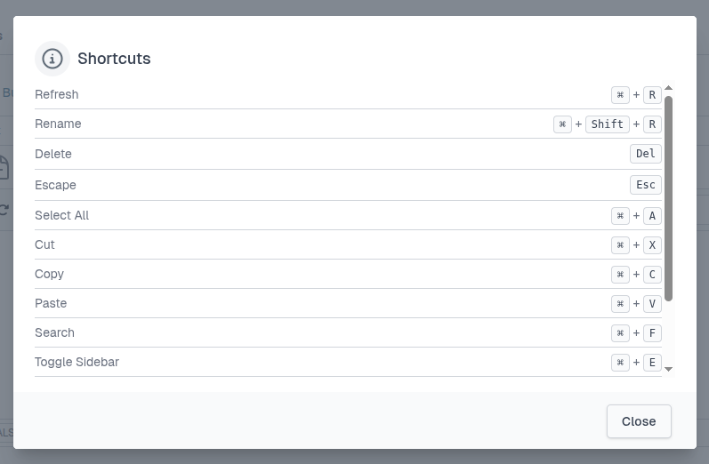
Only shortcuts for Mac systems are currently supported. If you are using Windows or Linux systems please use the task bars for object management as seen below:
Create objects within an S3 Bucket#
As mentioned above, S3 Buckets store data as objects. These objects can be folders and files. You can manage objects through the top panel of the Browser tab.
To create a folder, either select the File button on the top or select the New Folder icon underneath.

To create a file, either select the File button on the top or select the New File icon underneath.
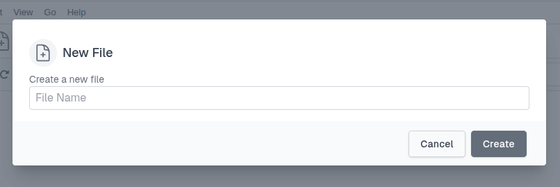
To upload a file, either select the File button on the top or select the Upload icon underneath. Here you can type or Browse which Bucket to upload to. You can drag and drop files.

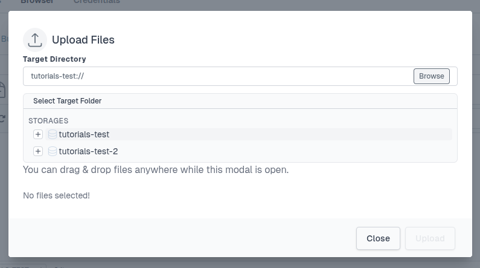
TBC:
Tip
For larger files, you can copy files programmatically. See our N page, for more information.
Managing objects within an S3 Bucket#
To rename a file or folder, select the file/folder and then select the Rename icon:
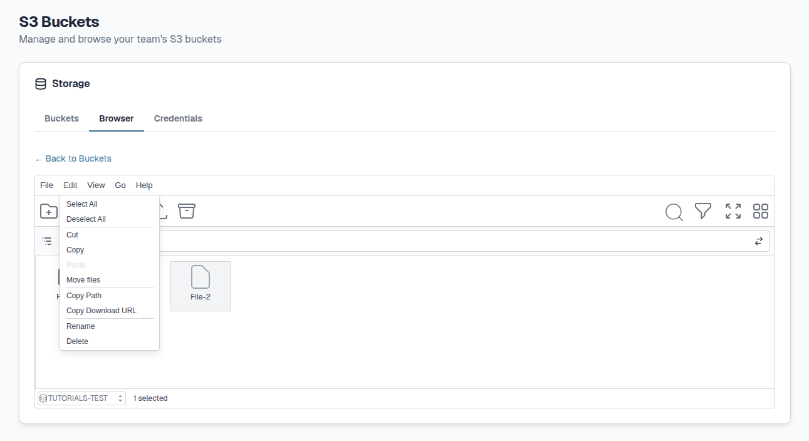
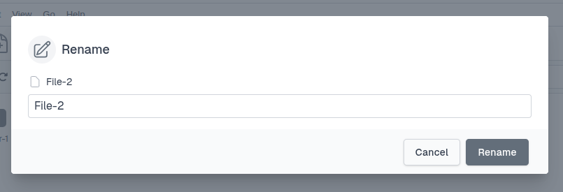
To delete a file or folder, select the file/folder and then select the Delete icon:
You will need to tick the box next to I'm sure delete it, This action cannot be undone.
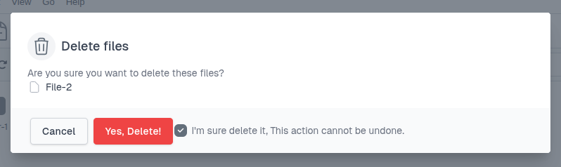
To archive (compress) files, select the file(s)/folder(s) and either select the File>Archive buttons or the Archive icon:

You can then name the new Archive:
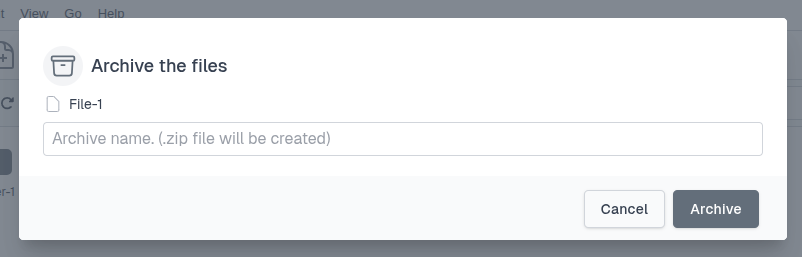
To unarchive (decompress) files, select the compressed file (.zip) and select either the File>Unarchive buttons or the Unarchive icon. This icon will only appear if an archive is selected.

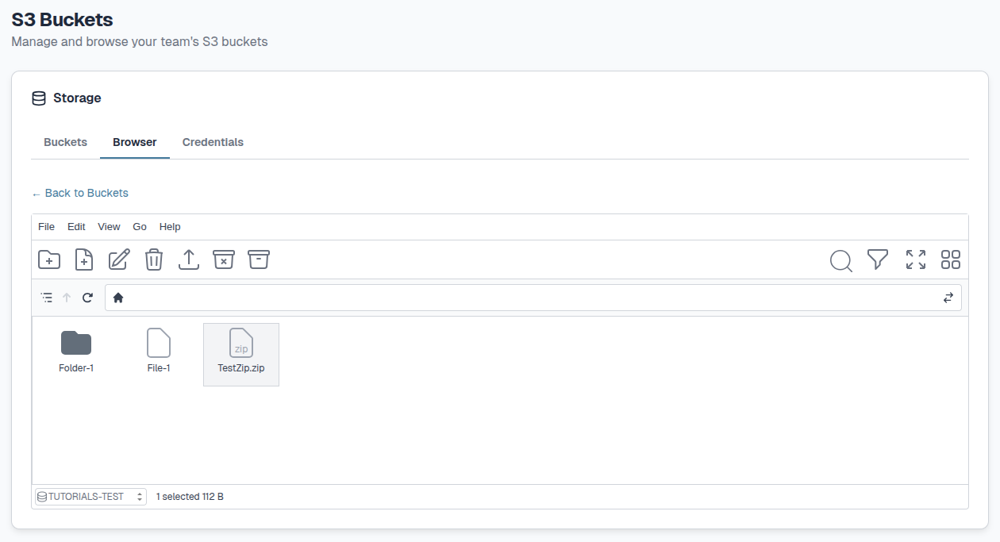
You will need to select the Unarchive button to confirm:

To download files either select File > Preview, double click or right click a file. The File name, size and modification date will be shown.
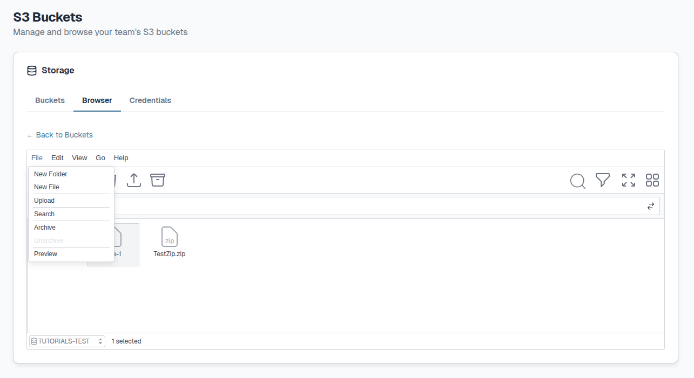
Select the Download button or alternatively right-click the button and select "Save link as".

When you have a lot of objects within a Bucket it can be difficult to find the right ones. To overcome this you can use the Search or Filter features to easily manage your objects.
To search through objects, either select the File button on the top or select the Search icon on the right.
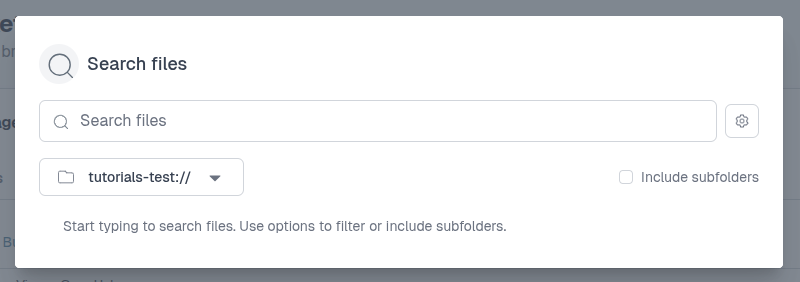
You can search within a specific bucket by selecting the bucket name.
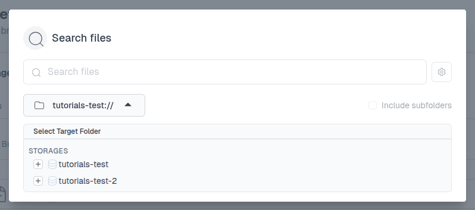
To Filter objects you can use the Filter icon. You can filter by Name, Size and Date among other options seen below:

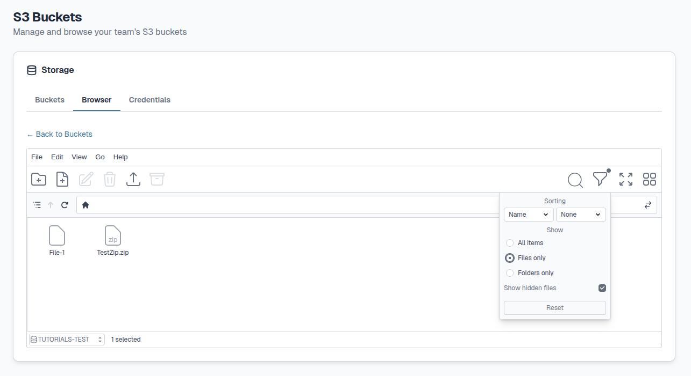

The browser can be viewed in three ways; Grid (default), List and Tree view.
Grid and List view can either be changed via the View button at the top or the Toggle View icons on the right hand side.


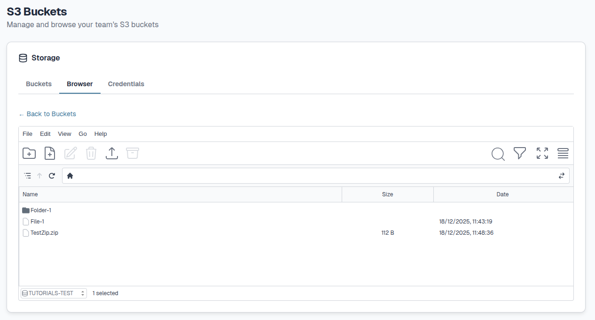
Tree view can be changed via the View button at the top.
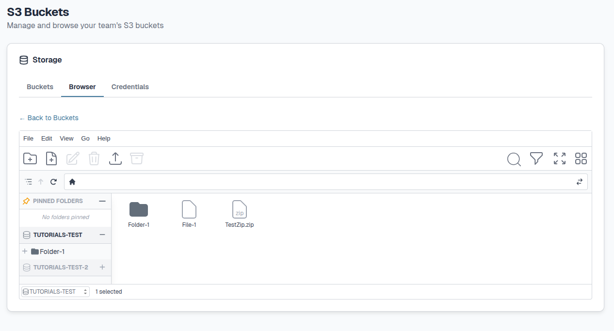
To move files within bucket you can either select File > Edit > Move files or right click the file:

You can select another bucket to move files between buckets:
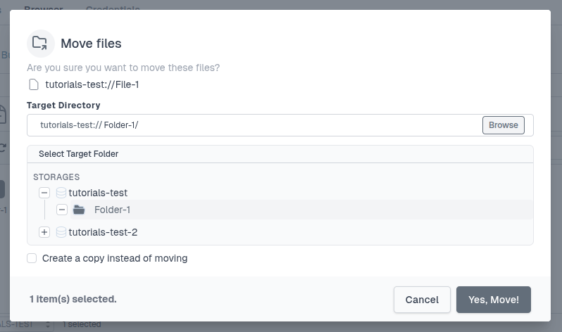
In both instances you will need to confirm by selecting Yes, Move!.
Alternatively, you can copy files instead of moving them by ticking Create a copy instead of moving.
You can directly copy files by selcting Edit > Copy and then Paste.
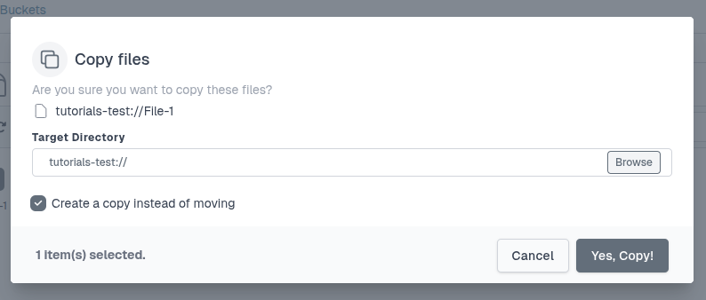
You can select another bucket to copy files between buckets:

In both instances you will need to confirm by selecting Yes, Copy!.
Deleting an S3 Bucket#
S3 Buckets and all associated objects can be deleted by selecting Actions from the Buckets tab:
You will need to type out the name of the bucket you would like to delete and select Delete to confirm:
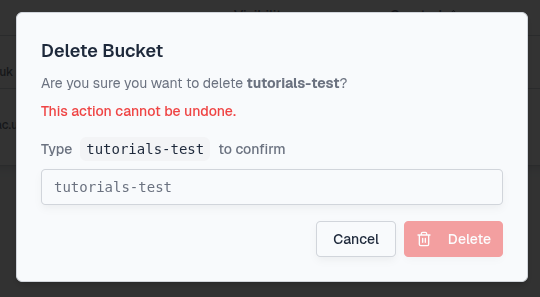
If the bucket contains objects, you will be reminded of the content of your bucket:
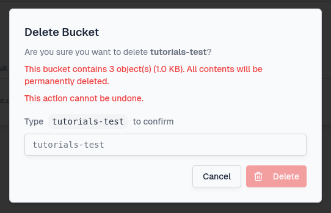
S3 Credentials#
Although all team members can access the teams S3 Buckets, users will have their own individual credentials to access buckets. Credentials include your S3 username, Access Key ID and Secret Access Key which you can find under the Credentials tab.
Warning
Do not share your Access Key ID or Secret Access Key with other users. If your credentials are accidentally shared you should rotate your API Keys as described below.
Your access keys will have already been injected into the JupyterLab environment as environment variables. We've also pre-configured aws cli and s3cmd to use the CLIMB S3 endpoints by default. As a result, you should be able to access buckets with no additional setup.
You can find the pre-configured variables $AWS_SECRET_ACCESS_KEY and $AWS_ACCESS_KEY_ID via the configuration file ~/.s3cfg.
Warning
Do not change any of these variables unless you are very confident with S3 and can use it without support !
If you accidentally share/expose your API Keys you can create new ones. To create new Keys select the Rotate API Keys button at the bottom left of the Credentials tab:

Once rotated, your new API Keys will be updated automatically and reconfigured in your notebooks.
What is next ?#
Once you understand S3 Buckets and how best to use them, you can look at our Data transfer page to see how you can programmatically access your Buckets.